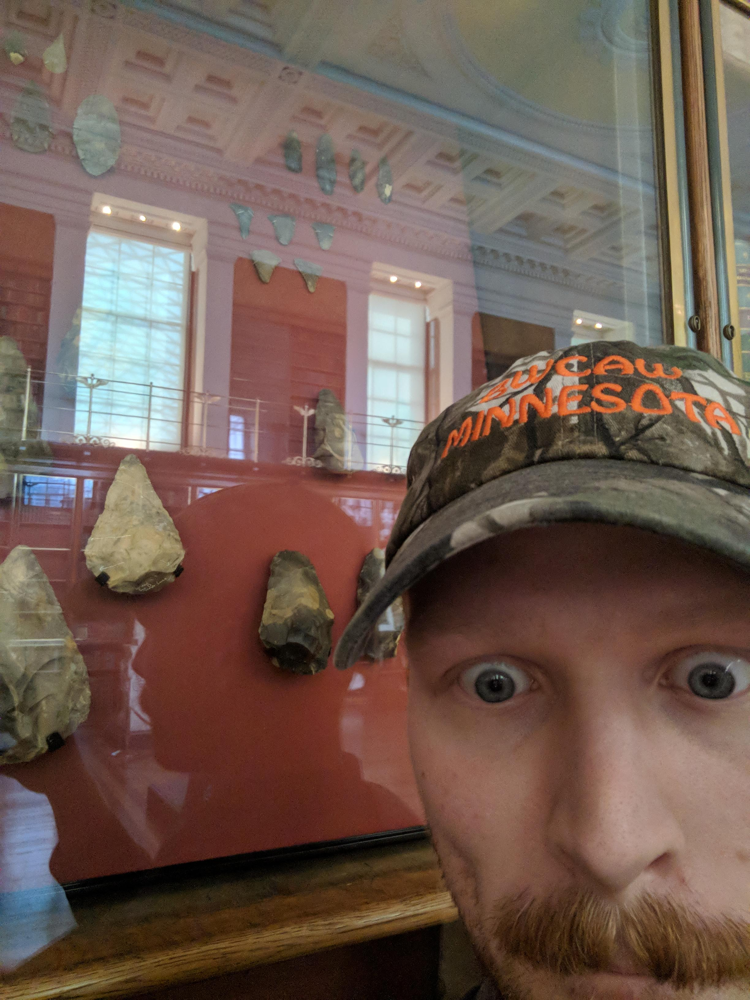

3. Reading about the handaxe 4. Hand of Homo Naledi 5. Sexy Handaxe Theory 7. 400,000 years ago 8. Pen Pals 11. The Gray’s Inn Land and Hoxne handaxe 12. At a Glance 17. Designing Fluid Interfaces 19. Inevitability and Magic 23. conclusion
This thesis is an exploration which started me stumbling across the handaxe. The handaxe is a stone tool many believe it to be our species first designed object. Its most recognized shape is a symmetrical bifacial teardrop, archeologists have
theorized how exactly they came to be this shape; everything from genetics to and object which aids sexual selection. I am loosely looking in to the phrase “it just feels right” uttered by Chan Karunamuni at Apple’s 2018 Designing Fluid
Interfaces presentation while an iPhone X and a handaxe sat projected side by side behind him. What is it for something to just feel right to us and how does that play in to our relationship with the things we create?
In mid-March of 2018, I hobbled in to San Serriffe, a bookstore in Amsterdam, and bought a book. As a detour I make every time I’m in Amsterdam, I usually wander around for twenty minutes before going up to an employee and ask for a specific
topic that I’m interested in. On this specific day, I can’t remember what I asked, but I do remember being taken around the shelves to see what was new and walking out with two books in my hands. Luckily for me, one of the books was called Are
We Human.
The book, written by Beatriz Colomina and Mark Wigley, explores humans’ relationship with design by looking at some of the most ancient archaeological objects. As I kept reading, I found myself becoming more and more attached to an object that
was shown on page 44.
It was a handaxe.
“Acheulean handaxes are one of the commonest, most widely distributed, and longest‐lasting archeological artifacts. Several hundred thousand Acheulean handaxes have been recovered from sites in many regions of the Old World, including North,
South, and East Africa; Europe; and Western, South, and East Asia.”[1]
There is just something about the handaxe that does it for me. I still can’t quite put my finger on it, but even after the first time I saw the handaxe, it felt as though I already knew this object intimately. It was like I obtained the blue
print to create one of these objects deep in myself, even though I didn’t know how to make one or just how difficult it is to knap.
Colomina and Wigley speak about our relationship to the the things we design. They disrupt the traditional way of designing thinking, the idea of a eureka moment: a designer sitting down, thinking, and struggling in his head until an idea pops
up, absent of outside influences. The authors disrupt the idea that the relationship between the human and design is a one way street. The things we design or create aren’t always represented to serve us, and arguing otherwise is fundamentally
untrue. In many ways one could say the relationship between humans and design two sided. Everything we design in turn designs us, and the cycle is never ending. With every design we make we are actually redesigning ourselves.
An example of how our tools in turn redesign us are the hands of Homo Naledi. The design of these hands are what seem to be a turning point in human evolution.
Homo Naledi’s hands show the features and functionalities that aid us in the ability to climb, throw things, and with the ability to manipulate tools. It the intersection of between two worlds, with characteristics favoring our past and that
of today.
In the book the hand of Homo naledi introduces the appearance to be this ability to produce and handle tools.
“In contrast to the phalangeal morphology, the full suite of derived thumb and wrist features in Hand 1 is found only in committed,
habitual tool users (for example, Neandertals and modern humans), suggesting that much of the hand anatomy
in H. naledi may be the result of selection for precision handling and better distribution of compressive loads during forceful manipulative behaviours such as tool making and tool use" [2]
Within the continual evolution of our species, the objects that we design, in turn, redesign the human. From this self-reinforcing cycle, the body inevitably adapts to its technological extensions
While addressing the handaxe’s design, Colomina and Wigley briefly reference the “sexy handaxe theory ”. The comical name of this theory originates from Dr. Marek Kohn and Dr. Steven Mithen’s paper, HANDAXES: PRODUCTS OF SEXUAL
SELECTION? and
Charles Darwin’s classic work, On The Origin of Species. These texts describe the handaxe as having the same functionality as a peacocks plumage or the long standing perfume Chanel N°5: as tools for sexual selection.
The sexy handaxe theory argues that handaxes were designed to look like beautiful tools, even at the cost of lost functionality; killing and butchering animals. The beauty of our ancestors’ tools, in theory, increased their chances of
sexual
reproduction by signaling one’s intellect or status as a craftsman or craftswoman.
With such a beautiful tool like a handaxe, the object’s creator basically said: ‘Look what I made! Despite, making this extremely time consuming and beautiful object I am still able to catch and collect an excess of food, fight off predators,
illness and can commit a consequential proportion of my time to design these alluring objects’[3]

Kohn and Mithen in HANDAXES: PRODUCTS OF SEXUAL SELECTION? writes...
“… that handaxes functioned not just to butcher animals or process plants but as Zahavian handicaps, indicating 'good genes'. Those hominids (male or female, see below) who were
able to make tine symmetrical hand-axes may have been preferentially chosen by the opposite sex as mates. Just as a peacock's tail may reliably indicate its 'success', so might the manufacture of a fine symmetrical handaxe have been a reliable
indicator of the hominid's ability to secure food, find shelter, escape from predation and compete successfully within the social group. Such hominids would have been attractive mates, their abilities indicating 'good genes’.”
The way it is explained in books, papers, presentations always felt a little like experiencing a narrative story, making it easy to visualize different scenarios.
I always picture an early human (could replace with ‘neanderthal’) sitting with his tush on the ground hunched over with their head between their knees, slowly chipping away at a block of flint, struggling until they felt happy with the final
design. After finishing their hard work, they have a moment of self reflection; feeling pride, satisfaction and tranquility. Once getting over this initial rush of feelings, the person gently pick up their handaxe with two hands and proceeds
to nervously present it to possible sexual partners.
After being consumed by the aura of the handaxe and deeply intrigued by Mithen’s work, I looked further into his theory. Just like any other piece of academia, the sexy handaxe theory has its critics.
When searching for responses to The sexy handaxe theory , I found that critics often referred to the theory by the abbreviation SHT. A coincidence? Maybe. In many of the titles that opposed the SHT, there are tongue-in-cheek references
that
almost seem to be speaking to one another. In consecutive order, the titles create a back and forth conversation between Mithen, as a defender of his theory, and Anna Machin, a critic:
1. Dr Marek Kohn & Dr Steven Mithen’s HANDAXES: PRODUCTS OF SEXUAL SELECTION? (sexy handaxe theory) - Steven Mithen & Dr Marek Kohn
2. Why handaxes just aren't that sexy: a response to Kohn & Mithen (1999) - Volume 82 Issue 317 - Anna Jane Machin
3. 'Whatever turns you on': a response to Anna Machin, 'why handaxes just aren't that sexy' - Steven Mithen
In her response to Kohn and Mithen, Machin states that the lack of evidence supporting the handaxe as a mechanism for sexual selection restricts the sexy handaxe theory from validity. However, that is not to say that handaxes were not
connected at all with the display (of what? Sexual attraction). Instead, Machin argues that it is more probable that it is a result of natural selection linked to the value of a well-made handaxe and its maker to the survival of the group. For
example how well the handaxe works and the value it can bring to the individual as well as other members of the group.[4]
Two handaxes folling around under a blanket
It should be noted that Machin does give the sexy handaxe theory some love. She writes that the theory is “one of the first attempts to suggest a role for the handaxe within the social domain” [5], and thanks Steven Mithen
for
the many hours of debate and his encouragement and backing for her to write the paper.
Steven Mithen’s final point in his response in Whatever Turns You On is “simply a question I would like to ask Machin, along with others who doubt the sexy handaxe theory . Why does it feel so enthralling to hold a rindy made symmetrical
handaxe in ones hand? Why does a symmetrical handaxe look and feel so attractive? To simply argue that this arises from an 'aesthetic sense' is inadequate, for where does that sense itself arise from (see Voland 2003)? My guess is that the
thrill of holding a finely made symmetrical handaxe is an echo of the Stone Age past, of a time when these objects played a key role in sexual display and to which our modern minds remain attuned.[6]”

Through my research on the origins and purpose of the handaxe, I routinely came across what seemed to be storytelling and the building of complex worlds. The opening sentence of Teresa Brennan’s book, The Transmission of Affect is a prime
example of such storytelling. Brennan writes: “Is there anyone who has not, at least once, walked into a room and ‘felt the atmosphere’?”
In a paper around the discovery of a handaxe factory, Paleoecology and Archeology of an Acheulian Site in Caddington written by C. Garth Sampson. In it is a description of the processes surrounding the handaxe that would
have taken place in an ancient cave. One being the event of endshocking, which usually happens in the thinning stage when the knapper is having a hard time judging how he or she will strike next. The strike then renders the handaxe broken or
unwanted by breaking it in to two pieces or completely compromise its structural integrity. And when all of a sudden something you’ve been working away at snaps in two, frustration and anger can quickly take over.
An essay called Symmetry is its Own Reward he sums up two specific happenings related to endshocking. “At Caddington, for example, conjoining parts of handaxes that ‘endshocked’ during manufacture were sometimes found
in two locations—the part that dropped to the floor remaining with the flakes from its creation, and the part that had temporarily remained in the knapper’s hand hurled several metres away in frustration (Smith 1894; Sampson 1978). According
to Sampson’s analysis (1978, 146-148), this person was a novice; when another more experienced knapper made the same mistake, they calmly let the pieces fall to the ground.”[7] Upon reading this I imagined Smith and Sampson creating this
scenario in parallel with the data and information collected. It must have been amazing to suddenly put the pieces together like that and imagine the pure rage of a novice leaving the body through the handaxe hurled across the room. As well as
the calmness and suppression of such emotions by a more experienced knapper, and as we know these actions and emotions run true through all sorts of makers today. You could assume that the feelings of joy, wonder and accomplishment when
holding the finished handaxe ring true to that of modern man gazing at their own object of design.

After finishing the initial book that drew me to the handaxe and discovering the contested nature of The sexy handaxe theory , I continued to get dragged deeper and deeper in to my fixation of the handaxe. My captivation with the handaxe
grew
so strong that the urge to see one in person was nearly irresistible. So, I started on a quest— or a handaxe pilgrimage— to see as many of these objects as I could, and meet up with what almost felt like a pen-pal at this point: the Hoxne
handaxe, the exact same object that sparked my endless fascination from that fateful book I bought in Amsterdam.
At this stage in my study of the handaxe, I was interning at a studio in Glasgow, not far from a prehistoric history museum in London I had read about. My bosses, Lizzie and Dan, had informed me weeks in advance of a business trip to London,
precisely where the Hoxne handaxe sat tucked away in the British Museum (is it the British History Museum?). The plan was arrive in London at night two days before and spend the day before our studios meeting in the museum. I was hopeful that
I’d be able to see the Hoxne handaxe, but I had no idea if it was it was permanently on display or not. I had a good feeling I was going to be able to see the Hoxne handaxe, but nothing was certain.
This is the front of the British Museum
I woke up at seven in the morning, brushed my teeth, and walked forty-five minutes to the museum with one mission. Once security checked my little bag, I entered and immediately found myself happily overwhelmed by the grandiose of the interior
and exhibitions. A museum assistant approached me with her arm extended offering the map and list of exhibitions on display at the moment. Unraveling the brochure revealed what seemed like to be an endless amount of exhibits, but none of which
particularly screamed ‘prehistoric’ or ‘handaxe’.
Knowing time was on my side, I decided just to do one big loop of the whole museum. I’d see the handaxe whenever I got to see it. During my loop, I saw jaw-dropping objects like the Rosetta Stone, Khorsabad ‘The Palace of Sargon’, Hoa
Hakananai'a 'lost or stolen friend’, Ancient Egypt, and more.
Hoa Hakananai'a 'stolen friend’
Rosetta Stone
Khorsabad ‘The Palace of Sargon’
Bust of Ramses II
After touring what seemed to be the whole museum, I broke out in an itchy sweat— something that happens when I feel like I might have failed or disappointed someone. What if the Hoxne handaxe— the object I’d been obsessing over for weeks—
wasn’t even here? Spending hours upon hours enjoying my time, waiting to stumble upon my pal the handaxe, I came to the realization that if I didn’t come across it soon, I might have missed my chance for good.
I hustled around with short choppy steps and my posture like a plank of wood, eyes at full focus. Zipping along and double checking corners of exhibitions I might have missed on my way to the Enlightenment Gallery. The gallery, which was
formally known as The King’s Library, held a collection of over 60,000 books from King George III, which is why I assumed, perhaps unjustifiably, that the Hoxne handaxe was not likely to be found there.
I stood at the entrance to the gallery, and my heart started to pound a little harder with anticipation. This could be the room. I was surprised just how galvanized I felt. It was like I was meeting a crush that I’d been talking to for months
online, only seeing the version of the person that they wanted me to see. Would it be the same in real life? Maybe I was afraid of getting cat-fished by a rock.
I had a good feeling when I walked in to the Elightenment Gallery
What first drew my attention in the gallery were the wooden islands that sat on either side of the room, that created a path down the middle of the room. On the islands, there seemed to be assorted items that didn’t necessarily have the
strongest connections to one another. The first glass box on the islands to the right contained carvings from Easter Island, Bark Cloth from a crazy sailing story, and a Tahitian headrest and pounder. The selection to the left contained an
eclectic assortment of objects from the Hawaiian islands.
Was excited to see what seemed to be groups of loosely assorted of items
After seeing the first few displays, I put my hands behind my back and hastily walked from island to island, leaning over with my face close to the glass to make sure I wasn’t missing anything. I could really feel the handaxe approaching me as
I went further and further into the gallery, and I was nearing the end of the room. Finally, at a glimpse out of the order of my eye, I spot it. Tunnel vision in full effect, all of my focus was on the Hoxne Handaxe.
I was breathing irregularly and could faintly feel my heart beat in my ears. Completely out of character, I take out my phone and proceed to take dozens of selfies. I have taken selfies in private to send to family and friends, but I can’t
recall a time where care took a selfie in public to satisfy myself. But this time, I needed to have proof that I came within inches of such a historic object.
It was every bit as magical as I anticipated it would be. From opaque black and beige coloring to the detailed imprints of the strikes that gave it its form, I was enamored with every inch of the objects. Something about them felt human, and
you could feel the effort and care someone put in to making this object. It just felt right.
I sat there for a couple moments with the two handaxes. The one on the left was the Gray’s Inn Lane handaxe, and the one on the right is John Frere’s Hoxne Handaxe. The Gray’s Inn Lane handaxe is cited as the first published handaxe and
sometimes cited as the first stone tool to be published as an ancient tool or weapon, even though there is proof of other stone tools had been recorded before. It was during times where the handaxe was thought to be the result of lighting or
meteorites, and in Jill Cooks writing she explains that at the time they were generally regarded as being of supernatural origin: made by elves or fairies or having fallen from the sky. As for the Hoxne handaxe, it was the first handaxe found
and recognized to be of human design in rather crazy circumstances[8].

After being around the handaxes, my adrenaline slipped away and I came back to my senses. I tilted my head to the right and peaked behind the display to find the jackpot. My jaw dropped as I shuffled over to the cabinet; in front of me, I saw
a family of handaxes. Again, the first thing I did was take out my phone and snap a selfie, then I proceeded to press my phone to the glass to take a picture of each handaxe.

They were a lovely suprise!
Each one had their own character, like little spirits with personalities and all. They seemed to yearn to get out of their glass cage and into the world in search of new experiences after 400,000 years. As I thought about each object
wanting to be nestled in the palm of someones hand, I turn back to the Hoxne handaxe. My fingers begin to curl in various ways as I try to imagine different ways it might have been held, and my shoulders start to tighten and raise, while my
arm tenses up simulating the muscles I thought would have been used. I knew if I was able to have it my hand it would just feel right.
My experience seeing the Hoxne handaxe did not disappoint. It was everything everyone said it was: magical, ancient, sexy, symmetrical, designed, and innately human. I double backed and retook every handaxe’s picture, from every angle I could
with my phone pressed flat up against the glass. It was even a little difficult to walk away knowing I may not get the chance to see these objects again for a long time. I left the museum to meet up with Lizzie and Dan to eat and plan for the
meeting the next day. I remember having my answer locked and loaded, excited to answer the question: “What did you do today?”
Upon getting back to Glasgow, my funky friend Sissel came to visit me. During her short we stay we chatted about what we were interested in at the moment and I spoke with her about my obsession with handaxes. I told her about the moment where
I saw the Hoxne handaxe out of the corner of my eye and how they felt like spirits, so alive and so human. In response to my ramblings, she asked “Did you see that pebble in my birthday invitation?!” I told her yes, but that I had no idea what
it was. She told me it was called the Makapansgat Pebble and began to recount its story to me as we sat on a soggy couch in a small cafe. The pebble’s story about its ancient discovery shares many similarities to the Hoxne handaxe’s story and
my own at the British Museum.
The Makapansgat Pebble
The Hoxne Handaxe in all its glory
The story of the Makapansgat pebble starts with someone walking along side a river, miles away from where they call home. At some point during the walk they glanced down at the river, and immediately, something caught their eye. In this moment
of recognition, the person made out what looked to be a face carved in to the side of the pebble. They bent down, picked up the pebble and found that not only was there a face looking back at them, it was their own reflection. Filled with
emotion, and maybe even what seemed to be magic, they stored it for safe keeping and continued on their way.
In the book Gardner’s Art through the Ages: The Western Perspective,Fred S. Kleiner briefly tells the story of this pebble’s initial discovery, bringing its discoverer to halt. He writes,
“The nearest known source of this variety of stone is
20 miles away from the cave. One of the early humans who took refuge in the rock shelter at Makapansgat must have noticed the pebble in a stream bed and, awestruck by the 'face' on the stone, brought it back for safekeeping.” [9]
There has been some speculation to whether this was the case or not. Robert G. Bednarik writes in his paper The ‘Australopithecine’ Cobble from Makapansgat, South Africa that “the visual properties of the Makapansgat cobble are so striking
that some commentators have found it hard to believe that it is simply a natural product. That, however, is precisely what it it: it bears no trace of any artificial modification.[10]” Because it has been proven to not be a man made object, it
is the first example of found art. In a short description of the Makapansgat pebble, the British Museums states this rock was found in a cave with the remains of early human ancestors. It was probably collected three million years ago because
its natural features make it look like a face. If this is the case, it is an early example of curiosity and it may be the earliest example of ‘found art’ anywhere in the world. [11]
Some experts have doubted that people of the australopithecine would have been able to recognize a face in the pebble. In Raymond A. Dart’s article The Waterworn Australopithecine Pebble of Many Faces from Makapansgat he describes his
experience of picking up the stone and looking at it through the eyes of not modern man, but of those who lived in the australopithecine.
“I had come finally to realize, if tardily, that it was necessary to study the pebble from an 'australopithecine' point of view. In that process I was turning the stone around until it was upside down. Then instantly the cause of those
inhibitions of antagonisms that had prevented me from looking at it seriously during the previous forty years and more became apparent. A complete perceptual transformation had taken place. The two little rounded 'eyes' retained their visual
status though their contours looked more square and adult. The huge 'brain' and ridiculously pinched infantile 'mouth' that had involuntarily prevented us sapient observers from orientating it otherwise, were now replaced by a dwarfed,
flattened, and indented 'skull-cap', above a broadly-grinning, robust and typical australopithecine 'face;. Its broad 'cheeks' and gaping 'mouth' have become so wide that even the total absence of nostril openings would have been incapable of
preventing any perceptive Australopithecus from recognizing it as anything other than a caricature of one or another of his extremely flat-faced male or female relatives in a positively hilarious mood.” [12]
Raymond A. Dart’s drawing of what Australopithecus would have imagined
What is common in both of the stories of our ancestors and modern man is this moment of recognition. A blip, an instant, that happens when everything suddenly clicks in to place. This moment can also be found in the story of the Hoxne handaxe,
which instead of being the oldest found piece of art, it is the earliest recognition that handaxes our ‘first’ designed object, were the work of early humans[13]. On the town of Hoxne’s website there is the story of how the Hoxne handaxe was
found. It reads:
“On 10th of August 1740 John Frere was born in Finningham, near Hoxne. As well as being a country squire at Roydon Hall, he was a graduate of Cambridge and a member of both the Royal Society of Antiquars and the Royal Society. In June 1797,
Frere paused to watch workman digging clay for bricks in a pit at the site of the Hoxne clay brick pit. His attention was caught by the regularly shaped triangular flints which the workmen were using to fill up potholes in the road. Frere
recognized the flints as human tools which we now call hand axes. This was the earliest recognition that hand axes were the work of early humans - rather than the widely held view that they were the result of thunderbolts or meteorites. The
flints had come from a layer of gravel 12 feet below the surface, underneath layers of sand and brick-earth. Frere correctly interpreted the overlying deposits as riverine.”
In both the stories of the Makapansgat Pebble and the Hoxne handaxe there was an identification of the self. In the pebble it was “anything other than a caricature of one or another of his extremely flat-faced male or female relatives in a
positively hilarious mood.” For the Hoxne handaxe, John Frere recognized “the flints as human tools which we now call hand axes.”
I continued to chase these objects and the atmosphere surrounding them while I was still in Scotland. I managed to go to three more museums, one being the National Scottish Museum in Edinburgh which also included another prehistoric objects
called stone carved balls, two in Glasgow being the Kelvingrove and Hunterian with the latter being the only one to have any.
In the National Scottish Museum I ran in to all type of handaxes and tools varying in complexity and refinement as well as bumping in to another prehistoric object called the stone carved ball, who’s background is also seems to be of some
mystery, but ultimately coming to the conclusion that it is also an object of display and value. Possibly a story telling device or valuable gift.
The first time I entered the Hunterian Museum, I walked with zero expectation in to a room where the first thing you saw was a tree created from different hand tools. My adrenaline went up and my phone immediately came out to take take a
couple pictures. Underneath the display read a description of the development of stone tools.
“The Stone Age to Paleolithic was the first period in the human development of technology, beginning with stone tools. Generally speaking, the people who lived in the Stone Age were hunters and gatherers. At the end of the period, the
Neolithic (New Stone Age) saw the adoption of agriculture and the development of pottery. Large stone axes, adzes and chisels were used to cut and shape wood. Large flints and knives were used for cutting up food and scraping hides and small
arrowheads had deadly accuracy for hunting. The tiny stone axes are amulets or lucky charms. The stone tools and flints coming out of the earthenware pot symbolise this period.”
“The oldest surviving things made by men are stone tools. A continuous series runs from them to the things of today....
Everything made now is either a replica or a variant of something made a little time ago and so on back without break to the first morning of human time.” -George Kubler
When I saw display of hand tools in the Hunterian Museum it was easy to imagine them infinitely branching up and outwards until the tools and objects of today. From the kinky to communicative the rate and complexity of objects added to the
wall would seem never ending. Failures, knockoffs and not so finished versions would take up the majority of the space. While looking at it you would occasionally glimpse at something that just feels right.
“…if you think about it, it's actually part of a long line of hand tools extending back thousands of years. The tool on the left here was used to extract bone marrow 150,000 years ago, extending the sharpness
of what our fingers could do.” -
Apple’s WWDC 2018 Designing Fluid Interfaces presentation
In Apple’s WWDC 2018 Designing Fluid Interfaces presentation, around two minutes in the image of a hand holding a stone handaxe sits to the left of another holding the iPhone X. In the beginning of the presentation Chan Karunamuni of Apple’s
Human Interface Design team tries to answer the question what actually “makes an interface feel fluid?”
…we've noticed that a lot of people actually describe it differently. You know, sometimes, when people actually try this stuff, when we show them a demo, and they try it, and they hold it in their hands, they sometimes say it feels fast. Or,
other people sometimes say it feels smooth.
And, when it's feeling really good, sometimes people even say it feels natural, or magical.
But, when it comes down to it, it really feels like, it's one of those things where you just know it when you feel it. It just feels right. And, you can have a gestural UI, and we've seen lots of gestural UI's out there, but if it's not done
right, something just feels off about it. And, it's oftentimes hard to put your finger on why.”
Later explaining “ A little bit more direct all the way to now, where we're finally stripping away all those layers back, to where you're directly interacting with the content. This to us is the magical element. It's when it stops feeling like
a computer, and starts feeling more like an extension of the natural world. This means the interface is now communicating with us at a much more ancient level than interfaces have ever done.”
The feelings that makes an interface feel fluid are almost parallel to the feelings I experienced when I saw the Hoxne handaxe for the first time: natural, magical and communicative on an ancient level. When it comes down to it they both
really just feel right. It’s an instant sensation, just like my encounter with the Hoxne handaxe at the British Museum or when I imagine the person picking up the Makapansgat pebble from the river.
slick robust design
What does it mean for a design, object or thing to just feels right? What makes it so hard for a company like Apple to describe elaborate on the moment when everything just comes together and they know its ready. Alan Dye, head of Human
Interface Design and his staff often describe their design as just having to be that way. In an interview with Business Insider Dye said “What we really love is when we make a product or an experience and it works in such a way that you just
imagine that there's no other way that it could have worked, and that the solution we've come up with is just inevitable…” [14] Upon reading this I started to imaging the way Apple programers, engineers and designers worked side by side chipping
away, slowly balancing the way things look and feel, asking question after question, “does this feel right?” There was an unbelievable amount of work until ending up with the “inevitably” fluid interface we have today. The handaxe shares this
act of chipping away then reflecting and trying to understand what you just made. Looping the process over and over till it gets to a level of refinement, functionality, pleasure, emotions where the creator is happy. In a way you can say that
the design of the handaxe feels inevitable. That the process of knapping naturally leads to a symmetrical design, and It is suggested that technology in general, handaxes in particular were linked to dopamine-releasing neurons in the brain.
The particularly pleasing attribute was symmetry, a part of an ancient neural network. [15] Symmetry in the handaxe seems to be inevitable, and seems to continue with the extensions of our body we continue to design today.
“Graphical user interface is the dominant feature of screens in all shapes and sizes. No single innovation has transformed communication as radically in the last half century as the GUI. In a very real,
practical sense we carry on most of our personal and professional business through interfaces. Knowing how interface structures our relation to knowledge and behavior is essential.“ [16]
The Human Interface Design team’s certainty that things will inevitably be the way they are suppose to be breeds remnants of some sort of prophesy and leans towards determinism. Im quick to jump to saying that this is morally wrong or
irresponsible – but then often struggle to explain why it feels this way. What possibly could be wrong with designing something to its inevitable conclusion? Fulfilling a prophesy, everything was meant to happen and you seem to determined
nothing for yourself. Timothy Snyder’s politics of inevitability may be able to be applied to the act of design. Designing with inevitability would be the idea that there is no idea. The cliché that would exist if you designed under
inevitability is that “there are no alternatives” and accepting this denies responsibility.[17] There is no way to know the exact impact a design will make, you can always predict how we as humans will be redesigned and shaped but you’ll never
know for sure.
Besides the iPhone X and Fluid Interfaces, the usage of magic appears throughout apples history. For example in Apple's 2007 iPhone presentation, Steve Jobs explains multitouch just works like magic. Magical terminology, connotations and
feelings are woven in to the software and hardware of todays technologies. These references to magic are closely related to the lack of understanding or transparency and the concealment of complexity. For example the term wizard has long been
used in job titles by programmers, developers, engineers, and applications. In computing, wizards were originally expert computer users (people) who could install software or help you with your installation, essentially a wizard used to be a
power-user, a programmer or someone with higher level of expertise. Later, they were software assistants (programs) to help with initial tasks of setting something up or installing.
“The pioneering work of interfaces in flight simulators, of head gear and foot pedals, and other apparatuses that would discipline the body to conform to a regime of screen-based and device-driven affordances made the discussion of
relationships of human to machine into a field known as HCI.”
HCI stands for Human computer interaction, the examples of interface see the human physically refitting their body to that of the extension body created. McLuhan’s thoughts are similar to those of Mark Wigley and Beatriz Colomina, in that the
things we design are not there to serve us but the other way around. That our extensions are what ultimately design us.
McLuhan’s thoughts in his chapter The Gadget Lover in Understanding Media speak of this conforming to the extensions of our body: “That is why we must, to use them at all, serve these objects, these extensions of
ourselves, as gods or minor religions. An Indian is the servo-mechanism of his canoe, as the cowboy of his horse or the executive of his clock…Physiologically, man in the normal use of technology (or his variously extended body) is perpetually
modified by it and in turn finds ever new ways of modifying his technology. Man becomes, as it were, the sex organs of the machine world, as the bee of the plant world, enabling it to fecundate and to evolve ever new forms.”
Besides the iPhone X and Fluid Interfaces, the usage of magic appears throughout apples history. For example in Apples 2007 iPhone presentation, Steve Jobs explains multitouch just works like magic. Magical terminology, connotations and
feelings are woven in to the software and hardware of todays technologies. These references to magic are closely related to the lack of understanding or transparency and the concealment of complexity. For example the term wizard has long been
used in job titles by programmers, developers, engineers, and applications. In computing, wizards were originally expert computer users (people) who could install software or help you with your installation, essentially a wizard used to be a
power-user, a programmer or someone with higher level of expertise. Later, they were software assistants (programs) to help with initial tasks of setting something up or installing.
What may be the most commonly known example of the word wizard is that of the setup or installation wizard. The earliest OED citation of the November 1992 MacUser magazine: “We'd like you to meet Wizards, step-by-step guides that are designed
to walk you through complex tasks.” Predating the MacUser magazine was Microsoft Publisher 1.0 in 1991, and in a 2001 article by Microsoft they state: “We realized early on that to make a mid-range desktop publishing program successful, we had
to address the fact that a lot of people simply don’t have the design skills necessary to make a page look good,” says Ed Ringness, the original development lead for Publisher 1.0. “No matter how easy we made it to use the tools, people
wouldn’t know what the tools were for. So the idea behind wizards was to get these people jump-started and do a lot of the design for them early on…Page Wizards were an ingenious and simple way to solve the conundrum. Using a set of document
templates created by professional designers, the wizard guides users through the initial setup of their publication, such as a newsletter or brochure. Once the content is in place, the user is then free to modify the document however he or she
wants.”
Andy's Card and his signature inside the first Apple Computer alongside other wizards
The term also appears within the work force of early Apple. In the spring of 1982 the Macintosh project started to gain more legitimacy and started to transition from a research oriented work to that of a mainstream project. Up to this point
in the business history their were no formal titles within the Mac group, and they had to be sorted out for when business cards are made. Andy Hertzfeld was given the title of “Senior Member of Technical Staff”, and to his ear sounded dull.
Because of this he told the secretary to not order them because he didn’t like his name. Steve Jobs came by the next day and mentioned to Andy that he heard about not wanting any cards. Steve insisted that he have them and that it didn’t
matter the title he used.
“After a little bit of thought, I decided on ‘Software Wizard’, because you couldn't tell where that fit in the corporate hierarchy, and it seemed a suitable metaphor to reflect the practical magic of software innovation.” [18]
After picking his
title he mentioned it to an engineer named Burrell Smith, who in turn immediately claimed the title of Hardware Wizard. It seems to this day Apple’s wizards still work within the realm of ‘practical magic’. Within the net.misc was posted the
1982 Hackers dictionary [19] where wizard and magic were defined as such:
WIZARD n.
1. A person who knows how a complex piece of software or hardware works; someone who can find and fix his bugs in an emergency. Rarely used at MIT, where HACKER is the preferred term.
2. A person who is permitted to do things forbidden to ordinary people, e.g., a "net wizard" on a TENEX may run programs which speak low-level host-imp protocol; an ADVENT wizard at SAIL may play Adventure during the day.
MAGIC adj.
1. As yet unexplained, or too complicated to explain. (Arthur C. Clarke once said that magic was as-yet-not-understood science.) "TTY echoing is controlled by a large number of magic bits." "This routine magically computes the parity of an
eight-bit byte in three instructions."
2. (SAIL) A feature not generally publicized which allows something otherwise impossible, or a feature formerly in that category but now unveiled. Example: The keyboard commands which override the screen-hiding features.
Within the definition of magic in the 1982 Hackers dictionary held the quote “Magic's just science that we don't understand yet.” from Arthur C. Clarke, author of the book 2001: A Space Odyssey. He also formulated three laws, in which the last
one states
“Any sufficiently advanced technology is indistinguishable from magic.” Again magic relating to the unexplainable and the technologies complexity. The way the terminology is used within computing culture you see their relationship
with power. We may be living amongst “wizards”. With magic’s complexity our extensions become enigmatic and mysterious.
We are enchanted, amazed, intrigued, and puzzled by the extensions of our bodies. Bewildered, endlessly confused by our capacity to produce objects that in turn transform ourselves and now a days our technology grows faster and its magic ever
more powerful. It’s the difficult attempt to negotiate our relationship with the things we’ve produced but not fully knowing how we produced it. In an interview with BuisnessWeek Steve Jobs explains how his life is becoming more and more of a
complete labrynth of technologies. ”We’re both busy and we both don't have a lot of time to learn how to use a washing machine or to use a phone - you get one of the phones now and you're never going to learn more than 5 per cent of the
features. You're never going to use more than 5 per cent, and, uh, it's very complicated. So you end up using just 5 per cent. It's insane: we all have busy lives, we have jobs and we have interests and some of us have children, everyone's
lives are just getting busier, not less busy, in this busy society. You just don't have time to learn this stuff, and everything's getting more complicated.”[20]
Id have to say I share similar feelings; always sensing that I am catching up to the pack and then figuring out I still have only scratched the surface. The relationship between our designs and this feeling of being just right, the magical and
the natural, seems to be innately human. It’s hard to come to come to a conclusion, it doesn’t seem to be black or white, I find it rather grey like most things that involve feelings. Really foggy, kinda scary, and a little fun. Our designs of
the present are an accumulation of our past. This could be a reason why my experience with the handaxe in a way felt nostalgic, like I have already met it before. The feeling our ancestors created when making and refining the handaxe seems to
have traveled through its lineage to the things of today. My relationship with the handaxe, has been an obsession that, truthfully, resulted in an in-depth exploration rather than any concrete answers about why things are this way.
Additionally, I’m not meaning to single out Apple as the sole designer of objects that “just feel right.” In fact, as I write this thesis, I am continually sliding through my MacBook’s fluid interface. It is not a critique of the company, I’m
hoping it serves to show that early man and big ol’Apple chase that very same spark.
By recognizing the intersection between design, technology, and human evolution, we come to a crossroad. A vague motif forms, as we look to the future things seem to be growing with uncertainty and at present we are just trying to wrap our
heads around the constant flow of things we make. It seems that the farther we look to our past the hazier things become, stories and narratives fill empty spaces in essays and books, but in looking back we are able to look back at the ebb and
flow of humans and their extensions. I feel grateful I picked up the book that introduced me to the hand axe on that day in Amsterdam. It dragged me along an exploration and introduced me to many things that changed the way I look at the
things I own and the things we produce. When a design just feels right, we uncover the space that lies between humans and our extensions, as living beings producing objects that almost feel alive in our hands. Beautiful designs, whether in
reference to an ancient tool or a cult-favorite cell phone, are perhaps the closest things to magic that we have achieved. [21]
Endnotes
[1] Corbey, Raymond, et al. “The Acheulean Handaxe: More like a Bird's Song than a Beatles' Tune?” The Canadian Journal of Chemical Engineering, Wiley-Blackwell, 22 Jan. 2016, onlinelibrary.wiley.com/doi/full/10.1002/evan.21467.
[3] Kohn, Marek, and Steven Mithen. “Handaxes: Products of Sexual Selection?” Antiquity, vol. 73, no. 281, 1999, pp. 519, doi:10.1017/s0003598x00065078
[4][5] Machin, A. (2008). Why handaxes just aren't that sexy: A response to Kohn & Mithen (1999). Antiquity, 82(317), 761-766. doi:10.1017/S0003598X00097362
[6] Mithen, S. (2008). ‘Whatever turns you on’: A response to Anna Machin, ‘Why handaxes just aren't that sexy’. Antiquity, 82(317), 766-769. doi:10.1017/S0003598X00097374
[7] White, M.J. and Foulds, F.W.F. (2018) 'Symmetry is its own reward : on the character and signicance of
Acheulean handaxe symmetry in the Middle Pleistocene.', Antiquity., 92 (362). pp. 304-319.
[8] Candlin, Fiona, and Raiford Guins. The Object Reader. Routledge, 2009.
[9] Kleiner F., 2009: Gardner's Art through the Ages: The Western Perspective, Wadsworth Publishing
[10] Bednarik, Robert G. “The 'Australopithecine' Cobble from Makapansgat, South Africa.” The South African Archaeological Bulletin, vol. 53, no. 167, 1998, pp. 4–8. JSTOR, JSTOR, www.jstor.org/stable/3889256.
[11] “South Africa.” British Museum, www.britishmuseum.org/about_us/past_exhibitions/2016/south_africa.aspx.
[12] Makapansgat Pebble
[13] “The British Museum Images.” British Museum Images, www.bmimages.com/preview.asp?image=00033400001.
[14] Leswing, Kif. “A Top Apple Designer Says Technological Change Will 'Happen Sooner than We Think'.” Business Insider, Business Insider, 17 July 2017,
www.businessinsider.com/apple-alan-dye-technological-change-will-happen-sooner-than-we-think-2017-7?international=true&r=US&IR=T.
[15] White, M.J. and Foulds, F.W.F. (2018) 'Symmetry is its own reward : on the character and signicance of Acheulean handaxe symmetry in the Middle Pleisto cene.', Antiquity., 92 (362). pp. 304-319.
[16] Drucker, Johanna. Graphesis: Visual Forms of Knowledge Production. Harvard University Press, 2014.
[17] Snyder, T. (2018). The road to unfreedom: Russia, Europe, America.
[20] The Seed of Apple's Innovation, Peter Burrows, BusinessWeek, 12 Oct 2004
[21] Thank you Anna banana
Thank you Merel Boers, Silvio Lorusso, Matthias Kreutzer, Jan Robert Leegte, Michel Hoogervorst, Dirk Vis, Anna Rynearson, Lukas Engelhardt, Leith Benkhedda and Sissel Möller for helping me so much!